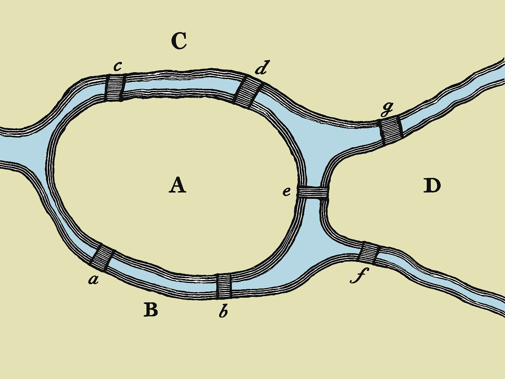

Example 3: Bridges of Königsberg
Full source code: test/Examples/BridgesKoenigsberg.purs

So far, we’ve seen how Transit helps you build type-safe state machines and generate state diagrams and transition tables. But the power of Transit extends far beyond documentation generation. The reflected data structure — the term-level representation of your type-level DSL specification — can be converted into a general-purpose graph data structure, enabling sophisticated graph analysis.
This example demonstrates this capability using the famous Seven Bridges of Königsberg problem. In 1736, the mathematician Leonhard Euler was asked whether it was possible to walk through the city of Königsberg crossing each of its seven bridges exactly once.1
In the picture above you see the topography of the historic city of Königsberg. The city is divided into four land areas (A, B, C, and D) and seven bridges (a, b, c, d, e, f, and g) connect them.
The Seven Bridges of Königsberg problem was solved by Leonhard Euler (1707–1783), a Swiss mathematician, physicist, and engineer who made fundamental contributions to mathematics and physics. His work on this problem is considered the foundation of graph theory.↩︎